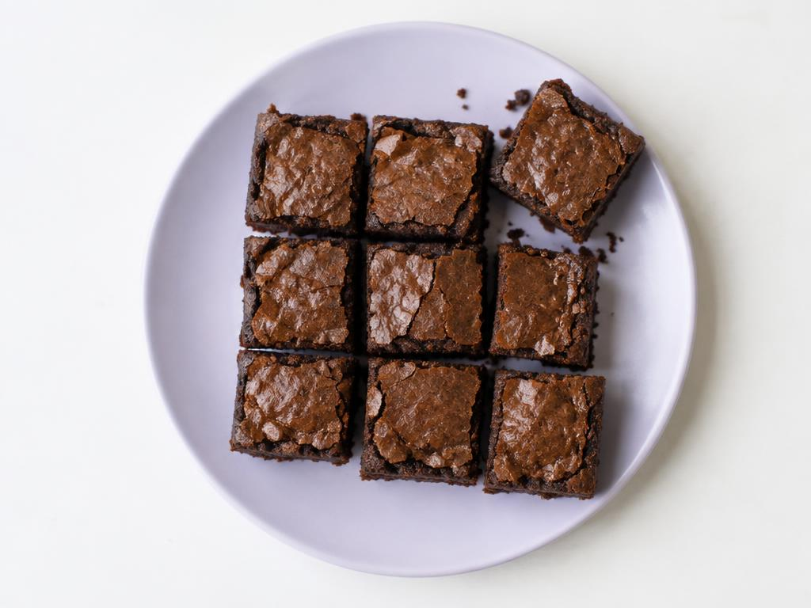

Brownie de Chocolate

Tempo de Preparo
40 minutos
Porções
12 pedaços
Dificuldade
Fácil
Ingredientes
200 g de chocolate meio amargo
150 g de manteiga sem sal
1 xícara de açúcar
3 ovos
3/4 xícara de farinha de trigo
2 colheres de sopa de cacau em pó
1 pitada de sal
Modo de preparo
Preaqueça o forno a 180 °C e unte uma forma com manteiga.
Derreta o chocolate com a manteiga em banho-maria e deixe amornar.
Bata os ovos com o açúcar até formar um creme claro.
Junte o chocolate derretido e misture bem.
Acrescente a farinha, o cacau e o sal, mexendo delicadamente.
Despeje na forma e asse por cerca de 25 minutos.
Espere esfriar e corte em quadrados.